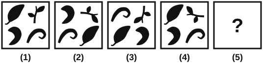
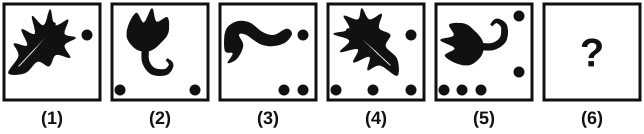
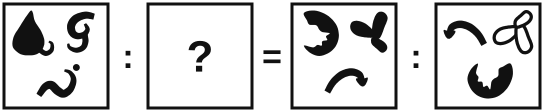
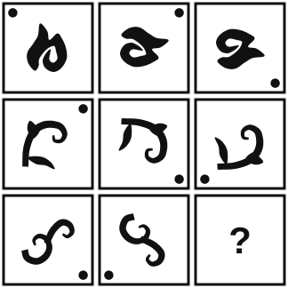
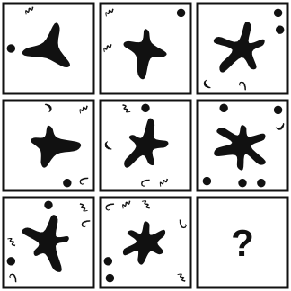
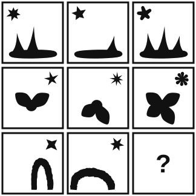

| No | 31 | 32 | 33 | 34 | 35 | 36 | 37 | 38 | 39 | 40 | 41 | 42 | 43 | 44 | 45 | 46 | 47 | 48 |
|---|---|---|---|---|---|---|---|---|---|---|---|---|---|---|---|---|---|---|
| Kunci | A | D | E | B | E | A | C | B | E | C | A | E | C | B | D | A | E | A |
| No | 49 | 50 | 51 | 52 | 53 | 54 | 55 | 56 | 57 | 58 | 59 | 60 | 61 | 62 | 63 | 64 | 65 |
|---|---|---|---|---|---|---|---|---|---|---|---|---|---|---|---|---|---|
| Kunci | D | B | C | E | D | B | D | C | A | E | C | B | C | D | A | B | D |
Dinas perhubungan memasang lampu penerangan baru di Jalan Lingkar Timur. Jumlah kecelakaan pada malam hari di jalan itu turun dari 24 kejadian pada tahun sebelum pemasangan menjadi 9 kejadian pada tahun sesudahnya. Kepala dinas menyimpulkan bahwa lampu penerangan baru itulah yang menurunkan kecelakaan pada malam hari.
Pernyataan berikut yang paling memperkuat kesimpulan tersebut adalah …
Yang sebenarnya ditanya: Pernyataan mana yang membuat kita makin yakin bahwa kecelakaan malam turun karena lampu baru, bukan karena hal lain.
Kalimat kunci: lampu penerangan baru itulah yang menurunkan kecelakaan pada malam hari
Cara cepat: Kesimpulan sebab-akibat menjadi kuat kalau penyebab lain disingkirkan. Cari opsi yang membuat lampu tinggal sendirian sebagai tersangka.
Langkah lengkap: Soal hanya membandingkan dua tahun: 24 kecelakaan sebelum lampu dipasang, 9 sesudahnya. Angka itu bisa turun karena banyak hal. Misalnya kendaraan yang lewat malam hari jauh berkurang. Jalan yang sepi wajar jarang kecelakaan, ada lampu baru atau tidak. Opsi A menutup kemungkinan itu: jumlah kendaraan malam sama besar di kedua tahun. Bedanya tinggal lampu, dan kesimpulan kepala dinas makin kokoh.
Kenapa opsi lain gugur:
Jawaban: A. Karena dengan jumlah kendaraan malam yang sama, penurunan kecelakaan tidak bisa lagi dijelaskan oleh jalan yang lebih sepi.
Analogi: Kamu ganti merek pupuk, lalu panen tomat naik. Supaya yakin pupuknya yang berjasa, kamu perlu tahu cuaca dan banyak tanamannya sama dengan musim lalu.
Yang sering membuat keliru: Wajar kalau kamu tergoda opsi C, karena bunyinya paling sejalan dengan kesimpulan. Pernyataan yang sekadar setuju belum tentu memperkuat. Yang memperkuat adalah pernyataan yang menyingkirkan penyebab lain.
Anggap semua premis berikut benar.
P1: Semua penyelam tim SAR adalah peserta yang telah lulus uji renang 400 meter.
P2: Tidak ada peserta yang lulus uji renang 400 meter yang berusia di bawah 18 tahun.
Kesimpulan yang pasti benar adalah …
Yang sebenarnya ditanya: Kesimpulan apa yang pasti benar kalau kedua premis dianggap benar.
Kalimat kunci: lulus uji renang 400 meter
Cara cepat: Frasa yang muncul di kedua premis adalah penghubungnya. Susun rantai: penyelam SAR, lalu lulus uji renang, lalu tidak berusia di bawah 18 tahun. Ujung ke ujung: tidak ada penyelam SAR yang berusia di bawah 18 tahun.
Langkah lengkap: Bayangkan tiga lingkaran. Lingkaran penyelam SAR berada utuh di dalam lingkaran peserta yang lulus uji renang (P1). Lingkaran peserta yang lulus itu sama sekali tidak bersentuhan dengan lingkaran orang di bawah 18 tahun (P2). Penyelam SAR terkurung di dalam lingkaran peserta lulus, sehingga mereka juga tidak mungkin menyentuh lingkaran di bawah 18 tahun. Itulah bunyi opsi D.
Kenapa opsi lain gugur:
Jawaban: D. Karena penyelam SAR seluruhnya termasuk kelompok yang lulus uji renang, dan kelompok itu tidak berisi orang berusia di bawah 18 tahun.
Analogi: Semua pemain inti tim sekolahmu sudah lolos tes kesehatan, dan tidak ada yang lolos tes itu sedang cedera. Tanpa memeriksa satu per satu, kamu tahu tidak ada pemain inti yang sedang cedera.
Yang sering membuat keliru: Opsi E paling licin. Kata lulus diam-diam berubah menjadi mengikuti. Baca kata kerjanya pelan-pelan, karena satu kata bisa memindahkan kesimpulan keluar dari premis.
Sebuah sekolah membuka kelas daring pada malam hari untuk siswa kelas XII. Satu semester kemudian, rata-rata nilai ujian matematika siswa kelas XII naik dari 68 menjadi 79. Kepala sekolah menyimpulkan bahwa kelas daring malam itulah yang menaikkan nilai siswa.
Pernyataan berikut yang paling memperlemah kesimpulan tersebut adalah …
Yang sebenarnya ditanya: Pernyataan mana yang membuat kita ragu bahwa kelas daring malam yang menaikkan nilai.
Kalimat kunci: kelas daring malam itulah yang menaikkan nilai siswa
Cara cepat: Melemahkan klaim sebab-akibat berarti menunjukkan penyebab lain yang bisa menghasilkan kenaikan yang sama. Cari opsi yang menawarkan tersangka lain.
Langkah lengkap: Nilai naik dari 68 ke 79 dalam satu semester, dan kepala sekolah menunjuk kelas daring malam. Sekarang tanyakan: adakah hal lain di semester itu yang bisa menaikkan nilai tanpa kelas daring? Opsi E menjawabnya. Soal ujiannya diganti dengan soal yang lebih mudah. Dengan soal yang lebih mudah, nilai bisa naik walaupun tidak ada kelas tambahan apa pun. Kenaikan itu tidak lagi bisa diklaim sebagai hasil kelas daring.
Kenapa opsi lain gugur:
Jawaban: E. Karena soal ujian yang lebih mudah bisa menaikkan nilai tanpa bantuan kelas daring.
Analogi: Timbanganmu menunjukkan berat turun 3 kg sejak kamu rutin lari pagi. Ternyata timbangannya baru diganti, dan yang baru selalu menunjukkan angka lebih ringan. Larinya belum tentu berjasa.
Yang sering membuat keliru: Opsi D terdengar negatif, jadi mudah dikira melemahkan. Melemahkan bukan berarti menjelekkan programnya. Yang harus digoyang adalah hubungan sebabnya: kelas daring menaikkan nilai.
Anggap semua premis berikut benar.
P1: Jika gudang logistik dibuka, relawan dapat mengambil terpal.
P2: Jika relawan dapat mengambil terpal, tenda darurat berdiri sebelum malam.
P3: Tenda darurat tidak berdiri sebelum malam.
Kesimpulan yang pasti benar adalah …
Yang sebenarnya ditanya: Apa yang pasti terjadi dari tiga premis yang saling menyambung.
Kalimat kunci: Tenda darurat tidak berdiri sebelum malam.
Cara cepat: P1 dan P2 membentuk satu rantai: gudang dibuka, terpal bisa diambil, tenda berdiri sebelum malam. P3 bilang ujung rantai itu tidak terjadi. Kalau ujungnya gagal, pangkalnya pun tidak terjadi: gudang tidak dibuka.
Langkah lengkap: Gabungkan P1 dan P2: jika gudang dibuka, tenda berdiri sebelum malam. Sekarang coba andaikan gudang dibuka. Relawan bisa mengambil terpal, lalu tenda berdiri sebelum malam. Hasil itu bertentangan dengan P3, jadi andaian tadi keliru. Gudang pasti tidak dibuka. Polanya bisa kamu pakai lagi: kalau A menjamin B, sedangkan B tidak terjadi, A pun tidak terjadi.
Kenapa opsi lain gugur:
Jawaban: B. Karena gudang yang dibuka pasti berujung pada tenda yang berdiri sebelum malam, padahal tenda tidak berdiri.
Analogi: Setiap kali ibumu pulang, motornya pasti terparkir di garasi. Sore ini garasi kosong. Kamu langsung tahu ibumu belum pulang.
Yang sering membuat keliru: Opsi E terasa seperti lawan kata yang wajar. Dalam logika, tidak sebelum malam tidak sama dengan setelah malam. Jangan menambah kejadian yang tidak dinyatakan premis.
HIGROMETER : KELEMBAPAN = … : …
Pasangan kata yang tepat untuk melengkapi analogi tersebut adalah …
Yang sebenarnya ditanya: Pasangan mana yang hubungannya sama dengan higrometer dan kelembapan.
Kalimat kunci: HIGROMETER : KELEMBAPAN (alat ukur di depan, besaran yang diukur di belakang)
Cara cepat: Buat kalimat penghubung: higrometer adalah alat untuk mengukur kelembapan. Masukkan setiap opsi ke kalimat itu. Yang lolos tanpa dipaksa: amperemeter adalah alat untuk mengukur kuat arus.
Langkah lengkap: Uji satu per satu dengan kalimat yang sama. Barometer mengukur tekanan udara, sedangkan cuaca hanya diperkirakan dari tekanan itu. Termometer mengukur suhu, sedangkan demam adalah keadaan tubuh. Suhu : termometer memasang besaran di depan, urutannya terbalik. Mikroskop dipakai untuk melihat benda kecil, bukan mengukur besaran. Amperemeter mengukur kuat arus listrik, persis seperti higrometer mengukur kelembapan.
Kenapa opsi lain gugur:
Jawaban: E. Karena amperemeter adalah alat untuk mengukur kuat arus, sama dengan higrometer yang mengukur kelembapan.
Analogi: Seperti meteran jahit dan panjang kain. Meteran tidak mengukur baju, melainkan panjangnya.
Yang sering membuat keliru: Opsi A dan B terasa dekat karena cuaca dan demam akrab dengan alatnya. Periksa apakah kata kedua benar-benar besaran yang angkanya dibaca dari alat itu.
Kaktus memiliki daun yang berubah bentuk menjadi duri untuk mengurangi penguapan air.
Hubungan antara ciri tubuh dan tujuannya yang sama dengan pernyataan tersebut ditunjukkan oleh …
Yang sebenarnya ditanya: Pernyataan mana yang hubungan ciri tubuh dan tujuannya sama dengan kaktus.
Kalimat kunci: untuk mengurangi penguapan air
Cara cepat: Rumuskan polanya: makhluk hidup memiliki ciri tubuh untuk menghemat air. Cari opsi dengan tujuan yang sama, bukan kata yang sama.
Langkah lengkap: Kaktus hidup di tempat kering. Daunnya berubah menjadi duri supaya air tidak banyak menguap. Intinya: ciri tubuh untuk menghemat air. Unta juga hidup di gurun, dan ginjalnya menghasilkan urin sangat pekat supaya cairan tubuh tidak banyak terbuang. Bagian tubuhnya berbeda, tujuannya sama. Opsi lain punya tujuan lain: melindungi diri, menarik penyerbuk, dan mencari makan.
Kenapa opsi lain gugur:
Jawaban: A. Karena ginjal unta dan duri kaktus sama-sama bekerja menghemat air tubuh.
Analogi: Dua rumah di daerah kering. Rumah pertama memasang tandon tertutup, rumah kedua memakai keran hemat air. Alatnya beda, maksudnya sama: air jangan cepat habis.
Yang sering membuat keliru: Mata cepat tertarik ke opsi B karena ada kata duri. Di soal analogi kalimat, kata yang sama sering hanya pengalih. Pegang tujuan di kalimat soal, lalu cocokkan tujuannya.
Nilai yang paling mendekati hasil 4.987 × 0,198 + √3.610 adalah …
Yang sebenarnya ditanya: Taksiran hasil 4.987 × 0,198 + √3.610 yang paling dekat.
Kalimat kunci: paling mendekati
Cara cepat: 4.987 × 0,198 kira-kira 5.000 × 0,198 = 990, dikurangi sedikit, jadi sekitar 987. √3.610 sedikit di atas 60, karena 60² = 3.600. Jumlahnya sekitar 1.047. Opsi terdekat 1.045.
Langkah lengkap: Bagian perkalian: 5.000 × 0,198 = 990. Angka 4.987 kurang 13 dari 5.000, jadi hasilnya berkurang 13 × 0,198 ≈ 2,6. Perkaliannya sekitar 987,4. Bagian akar: kelompokkan angka dua-dua dari belakang, 36|10. Akar 36 adalah 6, jadi √3.610 berada di angka 60-an. Tepatnya 60² = 3.600, sehingga √3.610 ≈ 60,1. Jumlah: 987,4 + 60,1 = 1.047,5. Opsi C (1.045) hanya berjarak 2,5.
Kenapa opsi lain gugur:
Jawaban: C. Karena 987,4 + 60,1 = 1.047,5, dan 1.045 adalah opsi yang paling dekat.
Analogi: Seperti menaksir belanja Rp49.870 ditambah Rp6.010. Kamu bulatkan jadi 50 ribu dan 6 ribu, lalu ingat totalnya sedikit di bawah 56 ribu.
Yang sering membuat keliru: Bagian akar paling sering meleset karena jumlah digitnya. Sebelum menarik akar, kelompokkan angka dua-dua dari belakang, lalu cek dengan mengkuadratkan taksiranmu.
Perhatikan tabel berikut. Nilai suku ke-30 adalah …
| Suku ke- | 2 | 3 | 7 | 10 | 16 |
| Nilai | 6 | 16 | 116 | 254 | 692 |
Yang sebenarnya ditanya: Nilai suku ke-30 dari tabel yang nomor sukunya melompat-lompat.
Kalimat kunci: Suku ke- 2, 3, 7, 10, 16
Cara cepat: Nomor sukunya tidak berurutan, jadi selisih nilai harus dibagi jarak nomor. Dari suku 2 ke 3: (16 − 6) ÷ 1 = 10. Dari suku 3 ke 7: (116 − 16) ÷ 4 = 25. Kenaikan rata-ratanya berubah, tanda pola kuadrat Un = an² + bn + c. Pada pola kuadrat, kenaikan rata-rata dari suku m ke suku n sama dengan a(m + n) + b.
Langkah lengkap: Dua kenaikan rata-rata tadi memberi 5a + b = 10 dan 10a + b = 25. Kurangkan keduanya: 5a = 15, jadi a = 3 dan b = −5. Masukkan ke suku ke-2: 12 − 10 + c = 6, jadi c = 4. Rumusnya Un = 3n² − 5n + 4. Cek di dua titik sisa: U10 = 300 − 50 + 4 = 254 dan U16 = 768 − 80 + 4 = 692. Cocok. Suku ke-30: 3 × 900 − 150 + 4 = 2.554.
Kenapa opsi lain gugur:
Jawaban: B. Karena rumus 3n² − 5n + 4 cocok di kelima titik tabel dan memberi suku ke-30 = 2.554.
Analogi: Seperti tagihan listrik yang dicatat bulan ke-2, ke-3, lalu meloncat ke bulan ke-7. Selisih tagihannya baru bermakna setelah dibagi banyak bulan yang terlewat.
Yang sering membuat keliru: Nomor suku yang melompat adalah inti soal ini. Kalau selisih nilai dihitung langsung tanpa dibagi jarak nomornya, polanya tidak akan pernah terlihat.
Perhatikan pola bilangan pada tabel berikut. Pasangan nilai X dan Y yang tepat adalah …
| 7 | 10 | 14 | 20 | X |
| 3 | 4 | 6 | 8 | Y |
Yang sebenarnya ditanya: Pasangan X dan Y di kolom kelima.
Kalimat kunci: tabel dua baris yang setiap kolomnya lahir dari kolom sebelumnya
Cara cepat: Lihat kolom pertama (7 dan 3) dan kolom kedua (10 dan 4). Ternyata 7 + 3 = 10 dan 7 − 3 = 4. Aturannya: atas baru = atas + bawah, bawah baru = atas − bawah. Dari kolom keempat (20 dan 8): X = 28 dan Y = 12.
Langkah lengkap: Uji aturan di semua kolom. Kolom 2 ke kolom 3: 10 + 4 = 14 dan 10 − 4 = 6. Kolom 3 ke kolom 4: 14 + 6 = 20 dan 14 − 6 = 8. Cocok terus. Kolom 4 ke kolom 5: X = 20 + 8 = 28 dan Y = 20 − 8 = 12. Kedua angka kolom kelima dihitung dari kolom keempat yang sama.
Kenapa opsi lain gugur:
Jawaban: E. Karena dari kolom keempat (20 dan 8) diperoleh 20 + 8 = 28 dan 20 − 8 = 12.
Analogi: Seperti buku kas dua kolom yang diperbarui setiap minggu. Catatan minggu depan selalu dihitung dari catatan minggu ini secara utuh. Kalau separuhnya diambil dari angka yang sudah diperbarui, kasnya kacau.
Yang sering membuat keliru: Baris atas 7, 10, 14, 20 menggoda dibaca sebagai deret sendiri dengan selisih 3, 4, 6. Coba lihat: selisih itu justru angka-angka di baris bawah. Kalau dua baris tampak saling memberi angka, periksa hubungan antarbaris lebih dulu.
Perhatikan pola bilangan pada tabel berikut. Nilai X yang tepat adalah …
| 3 | 2 | 7 |
| −3 | 3 | −30 |
| −4 | 2 | X |
Yang sebenarnya ditanya: Nilai X di baris ketiga.
Kalimat kunci: bilangan negatif di kolom pertama
Cara cepat: Baris pertama: 3² = 9, lalu 9 − 2 = 7. Aturannya: angka pertama dipangkatkan angka kedua, lalu dikurangi angka kedua. Baris ketiga: (−4)² − 2 = 16 − 2 = 14.
Langkah lengkap: Cek aturan di baris kedua dulu, karena baris ini memuat bilangan negatif: (−3)³ = −27, lalu −27 − 3 = −30. Cocok. Baru hitung baris ketiga. (−4)² = 16, karena bilangan negatif yang dipangkatkan genap hasilnya positif. Setelah itu 16 − 2 = 14.
Kenapa opsi lain gugur:
Jawaban: C. Karena (−4)² − 2 = 16 − 2 = 14, dengan aturan yang sama yang menghasilkan 7 dan −30.
Analogi: Dua tanda minus yang dikalikan saling meniadakan, seperti berbalik arah dua kali yang membuatmu menghadap ke depan lagi.
Yang sering membuat keliru: Bilangan negatif di kolom pertama sengaja dipasang. Ingat: negatif dipangkat ganjil tetap negatif (−27), dipangkat genap menjadi positif (16).
Pasangan pembagian berikut yang bernilai sama adalah …
Yang sebenarnya ditanya: Pasangan pembagian yang kedua ruasnya bernilai sama.
Kalimat kunci: bernilai sama
Cara cepat: Hilangkan koma dengan menggeser koma pada bilangan yang dibagi dan pembaginya sama banyak. 7,2 ÷ 0,6 = 72 ÷ 6 = 12, dan 84 ÷ 7 = 12. Sama.
Langkah lengkap: Ruas kiri A sampai D semuanya bernilai 12, sedangkan ruas kiri E bernilai 9. Penentunya ada di ruas kanan. A: 84 ÷ 7 = 12. B: 66 ÷ 6 = 11. C: 1,3 ÷ 0,1 = 13 ÷ 1 = 13. D: 1,2 ÷ 0,01 = 120 ÷ 1 = 120. E: 6,3 ÷ 0,7 = 9, sedangkan 0,9 ÷ 0,01 = 90. Hanya pasangan A yang kedua ruasnya 12.
Kenapa opsi lain gugur:
Jawaban: A. Karena 7,2 ÷ 0,6 dan 84 ÷ 7 sama-sama bernilai 12.
Analogi: Uang Rp7.200 untuk membeli barang seharga Rp600 sama saja dengan 72 lembar seratusan untuk barang seharga 6 lembar seratusan. Keduanya dapat 12 barang.
Yang sering membuat keliru: Empat ruas kiri bernilai 12, jadi ruas kiri tampak meyakinkan di mana-mana. Biasakan menghitung kedua ruas sebelum memilih.
Pasangan perkalian berikut yang bernilai sama adalah …
Yang sebenarnya ditanya: Pasangan perkalian yang hasilnya sama.
Kalimat kunci: bernilai sama
Cara cepat: Bandingkan faktornya sebelum mengalikan. 45 = 9 × 5 dan 64 = 16 × 4, sedangkan 36 = 9 × 4 dan 80 = 16 × 5. Isi faktornya persis sama, hanya bertukar tempat. Hasil keduanya 2.880.
Langkah lengkap: Cek opsi lain dengan hitungan. B: 48 × 60 = 2.880, tetapi 32 × 85 = 2.720. C: 72 × 40 = 2.880, tetapi 54 × 52 = 2.808. A: 28 × 330 = 9.240, sedangkan 38 × 230 = 8.740. D: 26 × 450 = 11.700, sedangkan 45 × 270 = 12.150. E: 45 × 64 = 2.880 dan 36 × 80 = 2.880.
Kenapa opsi lain gugur:
Jawaban: E. Karena 45 × 64 dan 36 × 80 tersusun dari faktor yang sama, yaitu 9, 16, 4, dan 5, sehingga keduanya bernilai 2.880.
Analogi: Sekotak kue berisi 4 baris × 9 kue sama banyaknya dengan 9 baris × 4 kue. Susunannya berubah, jumlah kuenya tidak.
Yang sering membuat keliru: Tiga ruas kiri sama-sama 2.880, dan dua opsi tampak seperti cermin angka. Pecah angka menjadi faktor, lalu cocokkan isinya.
Pasangan berikut yang TIDAK bernilai sama adalah …
Yang sebenarnya ditanya: Pasangan yang kedua ruasnya TIDAK sama.
Kalimat kunci: TIDAK bernilai sama
Cara cepat: Hitung setiap ruas, lalu cari yang beda. C: (84 ÷ 7) + (5 × 3) = 12 + 15 = 27, sedangkan (125 ÷ 5) + 4 = 25 + 4 = 29. Beda.
Langkah lengkap: A: 9 × 7 = 63 dan 72 − 9 = 63. B: 9 + 30 = 39 dan 13 × 3 = 39. D: 90 − 12 = 78 dan 26 × 3 = 78. E: 12 × 7 = 84 dan 98 − 14 = 84. Empat pasangan bernilai sama. Pasangan C berbeda, 27 dan 29.
Kenapa opsi lain gugur:
Jawaban: C. Karena ruas kirinya 27 sedangkan ruas kanannya 29.
Analogi: Seperti mencari kaus kaki yang tidak punya pasangan di keranjang cucian. Cocokkan dulu yang berpasangan, sisanya ketahuan sendiri.
Yang sering membuat keliru: Kata TIDAK membalik arah pencarian. Banyak yang menghitung dengan benar, lalu memilih pasangan pertama yang sama karena kebiasaan. Garis bawahi kata TIDAK sebelum mulai.
Tangki air sebuah truk pemadam kebakaran terisi 10% dari kapasitasnya. Setelah ditambah 3.000 liter air, tangki terisi 60% dari kapasitasnya. Kapasitas penuh tangki tersebut adalah …
Yang sebenarnya ditanya: Kapasitas penuh tangki.
Kalimat kunci: terisi 10% … ditambah 3.000 liter … terisi 60%
Cara cepat: Tambahan 3.000 liter mengisi selisih persennya: 60% − 10% = 50%. Kalau 50% = 3.000 liter, 100% = 6.000 liter.
Langkah lengkap: Pisahkan mana yang persen dan mana yang liter. Isi tangki berubah dari 10% ke 60%, naik 50% dari kapasitas. Kenaikan itu terjadi karena tambahan 3.000 liter. Jadi 50% kapasitas = 3.000 liter, dan kapasitas penuh = 2 × 3.000 = 6.000 liter. Cek balik: 10% dari 6.000 = 600 liter, ditambah 3.000 menjadi 3.600 liter, dan 3.600 memang 60% dari 6.000.
Kenapa opsi lain gugur:
Jawaban: B. Karena 3.000 liter setara dengan 50% kapasitas, sehingga kapasitas penuhnya 6.000 liter.
Analogi: Baterai ponselmu naik dari 10% ke 60% setelah diisi 2.000 mAh. Berarti 50% baterai = 2.000 mAh, dan baterai penuh 4.000 mAh.
Yang sering membuat keliru: Angka 3.000 liter harus dipasangkan dengan selisih persen, bukan dengan persen awal atau persen akhir. Begitu salah pasang, semua opsi lain terasa masuk akal.
Sebuah kolam benih ikan dapat diisi penuh oleh keran P dalam 4 jam dan oleh keran Q dalam 12 jam. Keran pembuang R dapat mengosongkan kolam yang penuh dalam 6 jam. Mula-mula kolam kosong, lalu keran P dan Q dibuka bersamaan. Satu jam kemudian keran R juga dibuka, dan ketiganya tetap terbuka. Kolam penuh setelah … sejak keran P dan Q dibuka.
Yang sebenarnya ditanya: Berapa lama kolam penuh, dihitung sejak keran P dan Q dibuka.
Kalimat kunci: Satu jam kemudian keran R juga dibuka
Cara cepat: Pakai bagian kolam per jam: P = 1/4, Q = 1/12, R = −1/6. Jam pertama (P dan Q) mengisi 1/3 kolam. Sesudah itu ketiganya mengisi 1/6 kolam per jam. Sisa 2/3 kolam butuh 4 jam. Total 1 + 4 = 5 jam.
Langkah lengkap: Samakan penyebut menjadi 12. Setiap jam P mengisi 3/12 kolam, Q mengisi 1/12, dan R membuang 2/12. Satu jam pertama hanya P dan Q yang terbuka: 4/12 = 1/3 kolam. Sisa kolam 2/3. Mulai jam kedua ketiganya terbuka: 3/12 + 1/12 − 2/12 = 2/12 = 1/6 kolam per jam. Waktu untuk sisanya: 2/3 ÷ 1/6 = 4 jam. Pertanyaan dihitung sejak P dan Q dibuka, jadi satu jam pertama ikut dijumlahkan: 5 jam.
Kenapa opsi lain gugur:
Jawaban: D. Karena satu jam pertama mengisi 1/3 kolam, lalu sisa 2/3 kolam terisi dalam 4 jam, sehingga totalnya 5 jam.
Analogi: Kamu mengisi ember dengan dua keran, lalu adikmu membuka sumbat di dasarnya. Air tetap naik walau lebih pelan, dan waktu sebelum sumbat dibuka tetap ikut dihitung.
Yang sering membuat keliru: Soal ini punya dua titik waktu: saat P dan Q dibuka, dan saat R dibuka. Pertanyaannya dihitung dari titik pertama. Opsi C menunggu orang yang lupa menambahkan jam pertama.
Di sebuah toko alat tulis, setiap map dijual dengan harga yang sama dan setiap spidol juga dijual dengan harga yang sama. Berapa harga 5 map dan 5 spidol?
Yang sebenarnya ditanya: Apakah harga 5 map dan 5 spidol bisa ditentukan dengan pasti.
Kalimat kunci: 5 map dan 5 spidol
Cara cepat: Yang ditanya jumlah keduanya, bukan harga masing-masing. 5 map dan 5 spidol adalah 2,5 kali 2 map dan 2 spidol. Pernyataan (1) memberi Rp18.000, jadi jawabannya 2,5 × 18.000 = Rp45.000.
Langkah lengkap: Pernyataan (1): 2 map dan 2 spidol Rp18.000, berarti 1 map dan 1 spidol Rp9.000, dan 5 map dan 5 spidol Rp45.000. Cukup, walaupun harga satu map belum diketahui. Pernyataan (2): map lebih mahal Rp3.000. Harga sepasang bisa Rp5.000 + Rp2.000 atau Rp10.000 + Rp7.000, jadi totalnya berubah-ubah. Tidak cukup. Pernyataan (1) saja cukup, pernyataan (2) saja tidak.
Kenapa opsi lain gugur:
Jawaban: A. Karena 5 map dan 5 spidol tepat 2,5 kali isi pernyataan (1), sedangkan pernyataan (2) tidak menentukan total.
Analogi: Dua porsi bakso dan dua es teh Rp40.000. Kamu tahu lima porsi bakso dan lima es teh Rp100.000 tanpa perlu tahu harga baksonya sendiri.
Yang sering membuat keliru: Refleks banyak orang: harus tahu harga map dan harga spidol dulu. Baca lagi yang ditanya. Kalau yang ditanya kelipatan dari data, satu pernyataan sudah cukup.
Sebuah truk BPBD dengan batas muatan 5.000 kg akan mengangkut karung beras bantuan dalam satu kali jalan. Apakah seluruh karung dapat diangkut tanpa melebihi batas muatan truk?
Yang sebenarnya ditanya: Apakah total berat karung pasti tidak melebihi 5.000 kg.
Kalimat kunci: Karung terberat beratnya 48 kg dan karung teringan beratnya 40 kg
Cara cepat: Gabungkan (1) dan (2). Kalau sisa karung seringan mungkin, total sekitar 4.400 kg. Kalau seberat mungkin, total sekitar 5.270 kg. Rentangnya melewati 5.000 kg, jadi jawabannya bisa ya, bisa tidak.
Langkah lengkap: Pernyataan (1) saja: 110 karung, tetapi beratnya tidak diketahui. Tidak cukup. Pernyataan (2) saja: tahu berat terberat dan teringan, tetapi tidak tahu banyaknya karung. Tidak cukup. Gabungan: ada satu karung 48 kg dan satu karung 40 kg, sedangkan 108 karung sisanya beratnya di antara 40 dan 48 kg. Kalau sisanya 40 kg semua, total 4.408 kg, aman. Kalau sisanya 48 kg semua, total 5.272 kg, melebihi batas. Dua keadaan yang sama-sama mungkin memberi jawaban berbeda. Bersama-sama pun tidak cukup.
Kenapa opsi lain gugur:
Jawaban: E. Karena dengan kedua pernyataan pun total berat bisa di bawah atau di atas 5.000 kg.
Analogi: Kamu tahu ada 20 tamu, dan setiap tamu makan paling sedikit 1 piring dan paling banyak 3 piring. Kamu belum bisa memastikan 40 piring cukup.
Yang sering membuat keliru: Pernyataan (2) terasa lengkap karena memuat dua angka berat. Terberat dan teringan hanyalah batas. Karung di antaranya bisa berapa saja.
Sebuah konveksi menerima satu pesanan seragam dan menugaskan 6 penjahit untuk mengerjakannya. Semua penjahit di konveksi itu bekerja dengan kecepatan yang sama. Apakah pesanan tersebut selesai dalam waktu paling lama 4 hari?
Yang sebenarnya ditanya: Apakah pesanan pasti selesai paling lama 4 hari jika dikerjakan 6 penjahit.
Kalimat kunci: menugaskan 6 penjahit
Cara cepat: Pernyataan (1): 10 penjahit × 3 hari = 30 hari kerja. Dibagi 6 penjahit = 5 hari. Lebih dari 4 hari, jadi jawabannya pasti tidak. Jawaban tidak yang pasti tetap berarti cukup.
Langkah lengkap: Pekerjaannya sama, penjahitnya lebih sedikit, waktunya lebih lama. 10 penjahit butuh 3 hari, berarti pekerjaannya setara 30 hari kerja satu penjahit. 6 penjahit butuh 30 ÷ 6 = 5 hari. Pertanyaan terjawab pasti, jadi (1) cukup. Pernyataan (2): 12 seragam per hari per penjahit, tetapi banyak seragam yang dipesan tidak disebut. Kalau pesanannya 200 seragam, 6 penjahit selesai dalam 3 hari. Kalau 600 seragam, lebih dari 8 hari. Tidak cukup.
Kenapa opsi lain gugur:
Jawaban: A. Karena pernyataan (1) memastikan pesanan selesai dalam 5 hari, sehingga jawaban tidak sudah pasti, sedangkan pernyataan (2) tidak memuat banyak seragam.
Analogi: Pagar yang dicat 4 orang selesai dalam 6 jam. Kalau yang datang hanya 3 orang, kamu tahu pasti pengecatan butuh 8 jam.
Yang sering membuat keliru: Jawaban tidak sering dikira berarti pernyataannya tidak cukup. Dalam soal seperti ini, yang dinilai adalah kepastian jawabannya, ya atau tidak.
Seleksi tahap akhir diikuti 84 peserta yang terdiri atas peserta putra dan peserta putri. Berapa banyak peserta putri?
Yang sebenarnya ditanya: Apakah banyak peserta putri bisa ditentukan.
Kalimat kunci: diikuti 84 peserta
Cara cepat: Total 84 sudah tertulis di soal. Pernyataan (1): 3/7 × 84 = 36 putri. Pernyataan (2): (84 − 12) ÷ 2 = 36 putri. Masing-masing cukup sendiri.
Langkah lengkap: Data di kalimat soal boleh dipakai bersama setiap pernyataan. Pernyataan (1): perbandingan 4 : 3 berarti 7 bagian = 84 orang, satu bagian 12 orang, putri 3 bagian = 36 orang. Pernyataan (2): putra = putri + 12, sehingga putri + putri + 12 = 84, dan putri = 36. Keduanya sampai ke 36 tanpa saling membantu.
Kenapa opsi lain gugur:
Jawaban: D. Karena dengan total 84 dari soal, pernyataan (1) saja dan pernyataan (2) saja masing-masing menghasilkan 36 putri.
Analogi: Uang 84 ribu dibagi kakak dan adik. Bagian adik bisa diketahui dari petunjuk perbandingannya 4 : 3, bisa juga dari petunjuk kakak dapat 12 ribu lebih banyak.
Yang sering membuat keliru: Banyak yang menilai pernyataan seolah kalimat soal tidak ada, lalu mengira semuanya kurang. Angka di kalimat soal ikut dipakai.
Berapa harga satu kilogram cabai pada awal bulan?
Yang sebenarnya ditanya: Apakah harga satu kilogram cabai pada awal bulan bisa dihitung.
Kalimat kunci: Rp55.000 per kilogram, yaitu 25% lebih tinggi daripada harga awal bulan
Cara cepat: Pernyataan (2): Rp55.000 adalah 125% harga awal, jadi harga awal = 55.000 ÷ 1,25 = Rp44.000. Pernyataan (1) hanya memuat persen tanpa rupiah.
Langkah lengkap: Pernyataan (1): harga naik 15% di pertengahan bulan, tetapi tidak ada satu pun harga dalam rupiah. Harga awal bisa berapa saja. Tidak cukup. Pernyataan (2): harga akhir bulan Rp55.000, dan itu 25% di atas harga awal. Artinya Rp55.000 = 125% harga awal. Satu persen = 55.000 ÷ 125 = 440, dan harga awal = 100 × 440 = Rp44.000. Cukup.
Kenapa opsi lain gugur:
Jawaban: B. Karena Rp55.000 adalah 125% harga awal, sehingga harga awal pasti Rp44.000, sedangkan pernyataan (1) tidak memuat rupiah.
Analogi: Gajimu sekarang Rp5.000.000, dan itu sudah naik 25% dari gaji pertama. Gaji pertamamu pasti Rp4.000.000.
Yang sering membuat keliru: Kekeliruan hitung yang sering muncul: mengurangi 25% dari Rp55.000 dan mendapat Rp41.250. Persen 25 itu dihitung dari harga awal, jadi harga awal dicari dengan membagi 1,25.
n adalah bilangan bulat positif. Apakah n habis dibagi 12?
Yang sebenarnya ditanya: Apakah n pasti habis dibagi 12.
Kalimat kunci: habis dibagi 12
Cara cepat: Pernyataan (1): n = 8 tidak habis dibagi 12, n = 12 habis. Tidak cukup. Pernyataan (2): n = 18 tidak, n = 12 ya. Tidak cukup. Gabungan: habis dibagi 4 dan 6 berarti habis dibagi KPK(4, 6) = 12. Jawabannya pasti ya.
Langkah lengkap: Untuk pertanyaan apakah, cari dua contoh yang memberi jawaban berbeda. Kalau ketemu, pernyataan itu tidak cukup. Bilangan 8 dan 12 sama-sama habis dibagi 4, tetapi hanya 12 yang habis dibagi 12. Bilangan 18 dan 12 sama-sama habis dibagi 6, tetapi hanya 12 yang habis dibagi 12. Kalau kedua pernyataan berlaku bersamaan, n habis dibagi KPK dari 4 dan 6. Faktorkan: 4 = 2², 6 = 2 × 3, KPK = 2² × 3 = 12.
Kenapa opsi lain gugur:
Jawaban: C. Karena bilangan yang habis dibagi 4 dan habis dibagi 6 pasti habis dibagi KPK-nya, yaitu 12.
Analogi: Bus A lewat setiap 4 menit, bus B setiap 6 menit. Keduanya lewat bersamaan setiap 12 menit, bukan setiap 24 menit.
Yang sering membuat keliru: Hasil kali 4 × 6 = 24 menggoda karena terasa seperti gabungan. Untuk dua syarat habis dibagi yang berlaku bersamaan, pakai KPK.
Kelas XI-B memiliki dua kegiatan ekstrakurikuler, yaitu paduan suara dan basket. Setiap siswa boleh mengikuti salah satu kegiatan, keduanya, atau tidak mengikuti keduanya. Berapa banyak siswa yang mengikuti paduan suara sekaligus basket?
Yang sebenarnya ditanya: Apakah banyak siswa yang mengikuti kedua kegiatan bisa ditentukan.
Kalimat kunci: atau tidak mengikuti keduanya
Cara cepat: Gabungan memberi 18 + 15 = 33 keikutsertaan di kelas 30 siswa. Kalau setiap siswa ikut kegiatan, irisannya 3. Soal mengizinkan siswa tidak ikut apa pun, jadi irisannya bisa 3, 4, 5, dan seterusnya. Tidak cukup.
Langkah lengkap: Pernyataan (1) saja: tanpa banyak siswa di kelas, irisan tidak bisa dicari. Pernyataan (2) saja: hanya total kelas. Gabungan: siswa yang ikut minimal satu kegiatan = 33 − irisan. Angka itu tidak boleh lebih dari 30, sehingga irisan paling sedikit 3. Contoh pertama: irisan 3, dan semua 30 siswa ikut kegiatan. Contoh kedua: irisan 5, ada 28 siswa yang ikut kegiatan dan 2 siswa tidak ikut apa-apa. Keduanya sesuai soal, tetapi jawabannya berbeda.
Kenapa opsi lain gugur:
Jawaban: E. Karena siswa yang tidak ikut kegiatan apa pun membuat irisannya bisa 3, 5, atau angka lain.
Analogi: Di arisan 30 orang, 18 orang membawa kue dan 15 orang membawa minuman. Kalau ada yang datang dengan tangan kosong, kamu belum bisa memastikan berapa orang yang membawa keduanya.
Yang sering membuat keliru: Rumus 18 + 15 − 30 sangat akrab, jadi tangan langsung menulis 3. Sebelum memakai rumus itu, cek kalimat soal: adakah siswa yang tidak ikut apa pun?
Lima regu siaga bencana, yaitu Anggrek, Bakung, Cempaka, Dahlia, dan Kenanga, mempresentasikan rencana kerja pada hari Senin sampai Jumat. Setiap hari hanya satu regu yang tampil, dan setiap regu membawakan satu topik yang berbeda: banjir, gempa, kebakaran, longsor, atau puting beliung. Ketentuannya sebagai berikut.
Pernyataan berikut yang pasti benar adalah …
Yang sebenarnya ditanya: Pernyataan yang benar di semua susunan jadwal yang mungkin.
Kalimat kunci: pasti benar
Cara cepat: Anggrek tidak membawakan gempa, jadi Anggrek tidak tampil Rabu. Uji tiga tempat yang tersisa untuk pasangan Anggrek lalu Cempaka. Hanya Anggrek Selasa dan Cempaka Rabu yang lolos. Cempaka tampil Rabu, jadi pasti membawakan gempa.
Langkah lengkap: Gempa ada di hari Rabu. Pasangan banjir lalu kebakaran harus berurutan dan tidak boleh memakai Rabu, jadi pasangan itu jatuh di Senin–Selasa atau Kamis–Jumat. Pasangan Anggrek lalu Cempaka tinggal tiga kemungkinan. Pertama, Anggrek Senin dan Cempaka Selasa. Anggrek tidak boleh banjir, jadi banjir–kebakaran pindah ke Kamis–Jumat. Topik Senin dan Selasa tinggal longsor dan puting beliung, padahal longsor milik Kenanga. Gagal. Kedua, Anggrek Kamis dan Cempaka Jumat. Dengan alasan yang sama, banjir–kebakaran di Senin–Selasa, dan longsor lagi-lagi jatuh ke Anggrek atau Cempaka. Gagal. Ketiga, Anggrek Selasa dan Cempaka Rabu. Lolos, dan dari sini muncul tiga susunan yang sah. Di ketiganya Cempaka tampil Rabu dan membawakan gempa.
Kenapa opsi lain gugur:
Jawaban: D. Karena Anggrek hanya bisa tampil Selasa, sehingga Cempaka selalu tampil Rabu, hari topik gempa.
Analogi: Seperti menyusun jadwal piket kelas. Kadang ada beberapa jadwal yang sah, dan yang pasti hanyalah hal yang sama di semua jadwal itu.
Yang sering membuat keliru: Begitu menemukan satu susunan yang cocok, banyak orang langsung memilih opsi yang benar di susunan itu. Soal pasti benar menuntut kamu memeriksa semua susunan, atau menemukan hal yang tidak bisa berubah.
Enam petugas piket, yaitu Fajar, Gita, Hasan, Indah, Joko, dan Lina, duduk mengelilingi sebuah meja bundar dengan enam kursi berjarak sama. Semua petugas duduk menghadap ke tengah meja. Ketentuannya sebagai berikut.
Petugas yang duduk tepat di hadapan Hasan adalah …
Yang sebenarnya ditanya: Siapa yang duduk tepat di hadapan Hasan.
Kalimat kunci: Semua petugas duduk menghadap ke tengah meja.
Cara cepat: Tempatkan Fajar, Gita, Indah, dan Joko. Dua kursi yang tersisa ternyata saling berhadapan, dan hanya Hasan dan Lina yang belum duduk. Hasan pasti berhadapan dengan Lina, di kursi mana pun ia duduk.
Langkah lengkap: Gambar enam kursi, beri nomor 1 sampai 6 searah jarum jam dilihat dari atas, lalu dudukkan Fajar di kursi 1. Bagi orang yang menghadap ke tengah, sebelah kanannya berada di arah berlawanan jarum jam. Gita di kanan Fajar, jadi Gita di kursi 6. Hadapan kursi 6 adalah kursi 3, jadi Indah di kursi 3. Kiri Indah searah jarum jam, jadi Joko di kursi 4. Kursi kosong tinggal 2 dan 5, dan keduanya berhadapan. Hasan dan Lina mengisi dua kursi itu dengan urutan apa pun.
Kenapa opsi lain gugur:
Jawaban: B. Karena setelah empat petugas ditempatkan, dua kursi sisa saling berhadapan dan hanya bisa diisi Hasan dan Lina.
Analogi: Seperti duduk di meja makan bundar keluarga. Kananmu adalah tangan kananmu sendiri saat menghadap ke meja, bukan kanan orang yang melihat dari pintu.
Yang sering membuat keliru: Kiri dan kanan paling sering terbalik di soal meja bundar. Bayangkan dirimu duduk di kursi tokoh itu, menghadap ke tengah, lalu angkat tangan kananmu.
Enam kapal, yaitu Kapal P, Q, R, S, T, dan U, tiba di sebuah pelabuhan pada hari yang sama secara bergantian, dan tidak ada dua kapal yang tiba bersamaan. Ketentuannya sebagai berikut.
Pernyataan berikut yang pasti benar adalah …
Yang sebenarnya ditanya: Pernyataan yang benar di semua urutan kedatangan yang mungkin.
Kalimat kunci: Kapal T bukan kapal yang tiba paling akhir.
Cara cepat: Kapal yang tiba paling akhir tidak boleh punya kapal lain yang wajib tiba sesudahnya. P, Q, R, dan S masing-masing punya kapal yang wajib tiba sesudahnya. Calonnya tinggal T dan U. T dilarang tiba paling akhir, jadi U pasti paling akhir.
Langkah lengkap: Susun dua rantai: P, R, S, T dan P, Q, U. Kapal P berada di pangkal kedua rantai, jadi P tiba pertama. Urutan yang mungkin ada empat: P Q R S T U, P R Q S T U, P R S Q T U, dan P R S T Q U. Di keempatnya U berada di urutan keenam.
Kenapa opsi lain gugur:
Jawaban: D. Karena setiap kapal selain T dan U punya kapal yang wajib tiba sesudahnya, dan T dilarang tiba paling akhir.
Analogi: Antrean di loket: orang terakhir adalah orang yang tidak punya siapa pun di belakangnya. Kalau hampir semua orang sudah pasti punya orang di belakangnya, calon orang terakhir tinggal sedikit.
Yang sering membuat keliru: Ketentuan 1 sampai 3 hanya memberi urutan sebagian. Jangan langsung menulis satu urutan lalu memilih opsi yang cocok dengannya. Ketentuan 4 yang pendek itulah penentunya.
Panitia pelatihan memesan paling sedikit 130 nasi kotak dari sebuah katering. Katering hanya menjual nasi kotak dalam paket berikut.
| Paket | Isi (kotak) | Harga per paket |
|---|---|---|
| Paket Melati | 20 | Rp380.000 |
| Paket Mawar | 35 | Rp595.000 |
| Paket Teratai | 50 | Rp800.000 |
Biaya paling sedikit yang harus dikeluarkan panitia adalah …
Yang sebenarnya ditanya: Biaya termurah untuk mendapatkan paling sedikit 130 nasi kotak.
Kalimat kunci: paling sedikit 130 nasi kotak
Cara cepat: Harga per kotak: Melati Rp19.000, Mawar Rp17.000, Teratai Rp16.000. Utamakan Teratai, lalu cari tambahan yang paling hemat. 2 Teratai (100 kotak) dan 1 Mawar (35 kotak) memberi 135 kotak dengan biaya Rp1.600.000 + Rp595.000 = Rp2.195.000.
Langkah lengkap: Bandingkan kombinasi yang memenuhi 130 kotak. Tiga Teratai: 150 kotak, Rp2.400.000. Dua Teratai dan satu Mawar: 135 kotak, Rp2.195.000. Dua Teratai dan dua Melati: 140 kotak, Rp2.360.000. Satu Teratai dan empat Melati: tepat 130 kotak, Rp2.320.000. Tiga Melati dan dua Mawar: tepat 130 kotak, Rp2.330.000. Kombinasi lain lebih mahal lagi. Termurah adalah dua Teratai dan satu Mawar. Kelebihan 5 kotak justru lebih hemat daripada memaksakan tepat 130.
Kenapa opsi lain gugur:
Jawaban: C. Karena 2 paket Teratai dan 1 paket Mawar memberi 135 kotak dengan biaya Rp2.195.000, termurah di antara semua kombinasi yang cukup.
Analogi: Seperti membeli air minum untuk acara. Kadang membeli sedikit lebih banyak dari kebutuhan dalam kemasan besar justru lebih murah daripada memaksakan jumlah pas dengan kemasan kecil.
Yang sering membuat keliru: Ada dua godaan di soal ini: memaksakan tepat 130 kotak, dan memborong paket termurah per kotak. Bandingkan beberapa kombinasi yang memenuhi syarat, karena yang termurah sering berada di antara keduanya.
Perhatikan urutan gambar berikut.

Gambar manakah yang tepat untuk mengganti tanda tanya?
Yang sebenarnya ditanya: gambar (5). Ada dua kelompok objek, dan masing-masing punya aturan sendiri.
Cara cepat: Kelompok pertama: objek kanan atas tidak pernah pindah kotak. Ia hanya berputar 90° searah jarum jam setiap langkah. Kelompok kedua: tiga objek lain bergilir di tiga kotak sisanya (kiri atas → kanan bawah → kiri bawah), satu kotak setiap langkah, melompati kotak objek yang diam. Susunannya kembali seperti semula setiap tiga langkah. Gambar (5) adalah langkah keempat. Susunan tiga objek itu sama dengan gambar (2), sedangkan objek kanan atas sudah berputar penuh sehingga kembali seperti di gambar (1).
Kenapa opsi lain gugur:
Jawaban: A. Opsi A memenuhi kedua kelompok aturan: susunan tiga objek seperti gambar (2) dan objek kanan atas kembali ke arah awal.
Analogi: Seperti tiga orang yang bergiliran duduk di tiga kursi, sementara orang keempat tetap di kursinya dan hanya memutar badan seperempat putaran setiap kali.
Yang sering membuat keliru: Jawabannya tidak sama dengan gambar mana pun yang terlihat. Kalau kamu menyalin gambar yang paling mirip, salah satu kelompok pasti keliru.
Perhatikan urutan gambar berikut.

Gambar manakah yang tepat untuk mengganti tanda tanya?
Yang sebenarnya ditanya: gambar (6). Ada dua hal yang berubah, dan keduanya punya irama sendiri.
Cara cepat: Bentuk besar (1), (2), (3) berbeda semua, jadi bentuk besar dibandingkan selang tiga: (1) dengan (4), (2) dengan (5). Keduanya diputar 90° berlawanan arah jarum jam, jadi bentuk besar di (6) = bentuk (3) yang diputar 90° berlawanan arah jarum jam. Bintik dihitung berurutan: 1, 2, 3, 4, 5. Bertambah satu setiap langkah, jadi gambar (6) punya 6 bintik. Letak bintik berpindah-pindah; yang dihitung hanya jumlahnya.
Kenapa opsi lain gugur:
Jawaban: E. Opsi E satu-satunya yang bentuk besarnya diputar 90° berlawanan arah jarum jam dari gambar (3) dan bintiknya 6.
Analogi: Seperti jadwal piket tiga hari yang berulang, sementara tanggal di kalender tetap maju satu hari setiap hari.
Yang sering membuat keliru: Setelah menemukan pola selang tiga, banyak orang ikut menerapkannya pada bintik. Bintik punya irama sendiri: maju satu setiap langkah.
Perhatikan hubungan gambar berikut.
Gambar manakah yang tepat untuk mengganti tanda tanya?
Yang sebenarnya ditanya: gambar (4) supaya hubungan (1):(2) sama dengan (3):(4).
Cara cepat: Lihat pasangan yang lengkap, (1):(2). Ada tiga objek, dan setiap objek punya perubahannya sendiri. Gumpal berkelopak: 6 menjadi 4 kelopak, jadi berkurang 2. Bintang bercabang: 5 menjadi 8 cabang, jadi bertambah 3. Dua objek atas juga bertukar tempat: yang tadinya di kiri pindah ke kanan. Objek bawah dicermin atas-bawah. Terapkan ke gambar (3): kelopak 5 menjadi 3, cabang 7 menjadi 10, tukar tempatnya, lalu ubah objek bawah dengan cara yang sama.
Kenapa opsi lain gugur:
Jawaban: C. Opsi C satu-satunya yang jumlah kelopak dan cabangnya tepat, tempat objek atasnya benar, dan objek bawahnya dicermin atas-bawah.
Analogi: Seperti tiga orang yang diberi tugas berbeda: satu menambah kelereng, satu membuang kelereng, satu hanya membalik badan. Tugas mereka tidak tertukar.
Yang sering membuat keliru: Rupa kelopak dan cabang ikut berubah ketika jumlahnya berubah, jadi jangan mencocokkan rupa, cukup hitung. Opsi yang salah sering benar di dua hal dan keliru di hal lain, jadi periksa ketiga objek sampai selesai.
Perhatikan hubungan gambar berikut.

Gambar manakah yang tepat untuk mengganti tanda tanya?
Yang sebenarnya ditanya: gambar (2) supaya hubungan (1):(2) sama dengan (3):(4).
Cara cepat: Lihat pasangan yang lengkap, (3):(4). Periksa setiap objek sendiri-sendiri, jangan sekaligus. Objek kiri atas: diputar 90° searah jarum jam. Objek kanan atas: dicermin atas-bawah lalu dibalik warnanya. Objek bawah: dicermin kiri-kanan. Selain itu, objek kiri atas dan bawah bertukar tempat. Terapkan perubahan yang sama ke setiap objek di sel lawannya.
Kenapa opsi lain gugur:
Jawaban: B. Opsi B satu-satunya gambar yang setiap objeknya berubah persis seperti pasangan contoh, termasuk tempatnya.
Analogi: Seperti foto dan klisenya: bentuknya sama, terang dan gelapnya bertukar.
Yang sering membuat keliru: Mata cepat menangkap perubahan warna lalu lupa memeriksa arah bentuknya. Cek dua hal itu di setiap objek.
Perhatikan kelima gambar berikut.
Gambar manakah yang berbeda dari yang lain?
Yang sebenarnya ditanya: satu gambar yang isinya tidak mengikuti aturan keempat gambar lain.
Cara cepat: Letak dan arah butir diacak di setiap gambar, jadi jangan mencari pola posisi atau putaran. Hitung tiap jenis butir. Jumlah satu jenis saja ternyata berubah-ubah di semua gambar, jadi aturannya bukan jumlah tetap. Bandingkan dua jenis sekaligus: di empat gambar, jumlah molekul 2 bulatan selalu sama dengan jumlah molekul 3 bulatan.
Kenapa opsi lain gugur:
Jawaban: C. Hanya opsi C yang jumlahnya tidak sama: 3 molekul 2 bulatan dan 4 molekul 3 bulatan.
Analogi: Seperti memeriksa pasangan sepatu di rak: jumlah sepatunya boleh berbeda di tiap rak, yang dicek apakah kiri dan kanannya selalu berpasangan.
Yang sering membuat keliru: Kalau kamu hanya menghitung satu jenis, angkanya berubah-ubah dan kamu akan mengira soal ini tanpa pola. Polanya ada pada hubungan dua jenis.
Perhatikan kelima gambar berikut.
Gambar manakah yang berbeda dari yang lain?
Yang sebenarnya ditanya: satu gambar yang salah satu objeknya tidak bisa didapat hanya dengan memutar.
Cara cepat: Letak objek sama di kelima gambar, tetapi setiap objek diputar sendiri-sendiri. Gambar utuhnya tidak akan cocok satu sama lain, jadi jangan mencocokkan gambar sekaligus. Periksa per letak. Bandingkan objek besar di kiri di kelima gambar, lalu objek kecil kanan atas, lalu objek kecil kanan bawah. Di setiap letak, pilih satu ujung yang khas, lalu lihat apakah sisi kiri dan kanannya tertukar. Objek yang diputar tetap punya urutan sisi yang sama; objek yang dicermin urutannya terbalik.
Kenapa opsi lain gugur:
Jawaban: D. Objek kecil kanan bawah di opsi D dibalik seperti bayangan cermin. Diputar ke arah mana pun, ia tidak bisa sama dengan objek kecil kanan bawah di empat gambar lain.
Analogi: Seperti memeriksa lima tumpukan sarung tangan kanan yang diletakkan miring ke berbagai arah: arahnya boleh beda-beda, yang dicari satu sarung tangan kiri.
Yang sering membuat keliru: Karena semua gambar tampak berbeda, mata mudah memilih gambar yang paling aneh susunannya. Yang menentukan hanya satu objek, dan objek itu bukan yang terbesar.
Perhatikan pola gambar pada matriks berikut.

Gambar manakah yang tepat untuk mengganti tanda tanya?
Yang sebenarnya ditanya: sel kanan bawah matriks 3×3.
Cara cepat: Setiap baris memakai satu bentuk, jadi bandingkan sel dalam baris yang sama. Dari kolom 1 ke kolom 2: diputar 90° searah jarum jam. Dari kolom 2 ke kolom 3: dicermin atas-bawah. Cek aturan itu di dua deret yang lengkap sebelum dipakai ke deret yang ada tanda tanyanya. Titik hitam punya aturan sendiri: pindah satu pojok searah jarum jam setiap sel.
Kenapa opsi lain gugur:
Jawaban: A. Opsi A mengikuti kedua langkah perubahan sampai sel terakhir, dan titiknya ada di pojok yang benar.
Analogi: Seperti jarum jam yang terus maju: di jam ketiga jarumnya tidak kembali ke angka awal.
Yang sering membuat keliru: Cermin atas-bawah dan cermin kiri-kanan mudah tertukar. Ikuti satu ujung bentuk: pada cermin atas-bawah ujung itu pindah dari atas ke bawah.
Perhatikan pola gambar pada matriks berikut.

Gambar manakah yang tepat untuk mengganti tanda tanya?
Yang sebenarnya ditanya: sel kanan bawah. Bentuk dan letak objek kecil diacak, jadi yang dihitung hanya jumlahnya.
Cara cepat: Hitung dua hal di setiap sel: cabang gumpal di tengah dan objek kecil di pinggir. Baris 1: 3/2, 4/3, 5/4 (cabang/objek kecil). Keduanya bertambah satu tiap kolom. Baris 3 mulai dari 5/6, 6/7, jadi sel terakhir 7 cabang dan 8 objek kecil. Cek lewat kolom 3: 5/4, 6/6, lalu 7/8. Selisihnya tetap, hasilnya sama.
Kenapa opsi lain gugur:
Jawaban: B. Opsi B satu-satunya yang punya 7 cabang dan 8 objek kecil.
Analogi: Seperti menghitung uang di dompet: bentuk koin dan letaknya tidak penting, jumlahnya yang dicek.
Yang sering membuat keliru: Objek kecil berbentuk macam-macam supaya kamu sibuk mencari pola bentuk. Hitung saja semuanya, apa pun bentuknya.
Perhatikan pola gambar pada matriks berikut.

Gambar manakah yang tepat untuk mengganti tanda tanya?
Yang sebenarnya ditanya: sel kanan bawah matriks 3×3.
Cara cepat: Bandingkan per baris. Setiap sel punya satu objek besar dan satu bintang kecil, dan keduanya punya aturan sendiri. Objek besar: kolom 3 adalah gabungan objek besar kolom 1 dan kolom 2, ditumpuk di tempat yang sama. Bagian yang muncul di dua kolom sekaligus tetap ada, cukup sekali. Bintang kecil: kolom 3 memakai bintang kecil kolom 2, hanya ujungnya yang berubah dari lancip menjadi tumpul. Bintang kecil kolom 1 tidak dipakai. Cek dua aturan itu di baris 1 dan baris 2, lalu terapkan ke baris 3.
Kenapa opsi lain gugur:
Jawaban: D. Opsi D satu-satunya yang objek besarnya gabungan utuh kolom 1 dan kolom 2, dan bintang kecilnya bintang kolom 2 yang ujungnya sudah tumpul.
Analogi: Seperti menumpuk dua lembar plastik bening bergambar: semua gambar dari kedua lembar terlihat bersama dalam satu tumpukan.
Yang sering membuat keliru: Bintang kecil kolom 1 dan kolom 2 sama-sama lancip dan mirip, jadi mudah salah ambil. Hitung cabangnya: yang dipakai selalu bintang kolom 2.